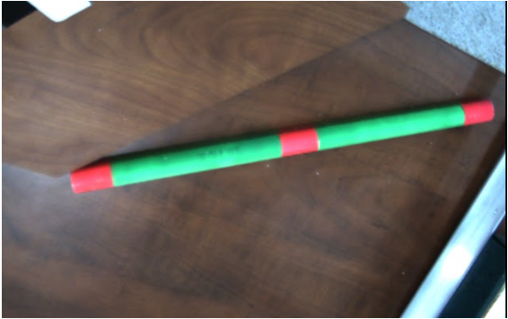

BoofCV is an open source java library for computer vision and robotics applications. Boof CV is organized into several packages including image processing, feature recognition, calibration, I/O and a lot more. It has many image processing capabilities. We mainly use Image Segmentation.
An image is segmented using color information. First the image is converted into HSV color space to add robustness against changes in lighting. Then all pixels that are close enough to the target color with our metric are kept, and the rest are discarded. In order to identify blobs of a single color, a flood fill was performed on the resulting segmented image, converting an image into a list of blob centers and areas. This straightforward method of image processing allowed us to focus on the more interesting aspects of the algorithm.

|

|
Input image |
Segmented image |
|
 |
|
Original object image |
Segmented object image |
float[] color = new float[3];
int rgb = image.getRGB(e.getX(),e.getY());
ColorHsv.rgbToHsv((rgb >> 16) & 0xFF, (rgb >> 8) & 0xFF, rgb & 0xFF, color);
System.out.println("H = " + color[0]+" S = "+color[1]+" V = "+color[2]);Planar<GrayF32> input = ConvertBufferedImage.convertFromMulti(image,null,true,GrayF32.class);
Planar<GrayF32> hsv = input.createSameShape();
ColorHsv.rgbToHsv_F32(input,hsv);
float maxDist2 = 0.4f*0.4f;
GrayF32 H = hsv.getBand(0);
GrayF32 S = hsv.getBand(1);
float adjustUnits = (float)(Math.PI/2.0);
BufferedImage output = new BufferedImage(input.width,input.height,BufferedImage.TYPE_INT_RGB);
for( int y = 0; y < hsv.height; y++ ) {
for( int x = 0; x < hsv.width; x++ ) {
float dh = UtilAngle.dist(H.unsafe_get(x,y),hue);
float ds = (S.unsafe_get(x,y)-saturation)*adjustUnits;
float dist2 = dh*dh + ds*ds;
if( dist2 <= maxDist2 ) {
output.setRGB(x,y,image.getRGB(x,y));
}
}
}